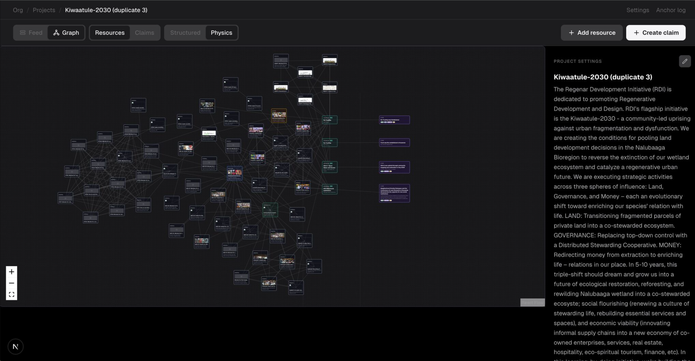

Waka is a perceptual system — contextual signal that distributed protocols, contracts, and agents can act on as verified information about the state of the world.
Data doesn't run the world. Claims do.
Operationally, Waka is a cross-protocol data and claims sovereignty system — a coordination interface for creating and managing sovereign claims that can be authenticated, anchored, and issued across a range of identity and storage systems. A Verifiable-Credentials-based composable witness model opens a design space for verification that originating communities control — enfranchising rather than alienating local stakeholders.
What Waka produces is portable and protocol-agnostic: its anchors can trigger autonomous smart contracts, feed certification bodies, drive allocation and crediting decisions, and supply impact-evaluation and insurance systems with verified claims about what has happened on the ground — the substrate nature-positive infrastructure needs to actually run.